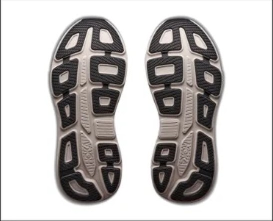
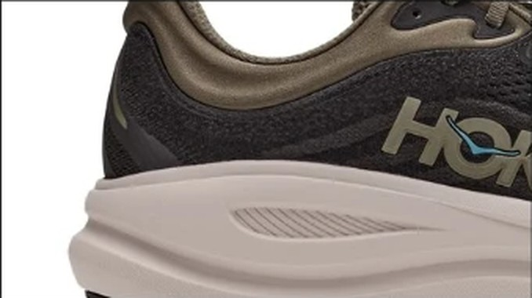

DAILY｜クッション型デイリー
かかと幅104.2mm、どっしり構える。
かかとの幅104.2mmは、スコアのある107足の中で4番目に広い。衝撃吸収は146SAで、上から24番目。広い土台とクッションで、ゆっくり長く走るための靴である。ただし実測303gと重く、1kmあたり約40円は高め。デイリー部門67足中18位。
ゆっくり長く走る人。脚への衝撃を減らしたい人。着地を安定させたい人。
ペースを上げる練習にも使いたい人。軽い靴が好きな人。費用を抑えたい人。


かかとの幅は104.2mm。比較相手のMore v5（105.0mm）とほぼ同じで、GHOST 18（95.9mm）より約8mm広い。安定性は4.0点。
衝撃吸収146SAは、Cloudeclipse（141SA）より高い。クッションは4.0点で、履き心地の主観評価は4.5ある。
摩耗深度は0.9mmで、推定寿命は約600km。1kmあたり約40円で、比較する2足より高くつく。
5点満点。計測値を当サイトのルールで点数にしたもの。
クッション4.0、安定性4.0、耐久性4.0と、デイリーで重く見る項目は揃っている。軽さ1.5が大きく足を引っ張り、性能点は18位になった。
広いほど土台が安定する。
軽いほど短い。
| Bondi 9 | More v5 | Cloudeclipse | |
|---|---|---|---|
| 価格 | ¥24,200 | ¥19,800 | ¥23,100 |
| 実測重量 | 303g | 308g | 272g |
| 衝撃吸収（SA） | 146 | 156 | 141 |
| エネルギーリターン前足部 | 60.3% | 56.6% | 55.9% |
| 摩擦係数 | 0.45 | 0.55 | 0.45 |
| 摩耗深度 | 0.9mm | 0.7mm | 0.5mm |
| 性能点 | 3.80 | 4.25 | 3.82 |
| コスパ点 | 3 | 4.5 | 3.5 |
正直に言うと、More v5のほうが条件はいい。かかと幅とクッションはMore v5が上で、価格は¥4,400安く、性能点も4.25とデイリー部門2位。Cloudeclipseは31g軽く、減りにくい。Bondi 9を選ぶなら、試着して足に合うかで決めたい。
弱点は重さとグリップである。実測303gは、107足の中で重いほうから8番目。摩擦係数も0.45と高くない。雨の日は注意したい。
比較相手のMore v5は数字で上回る。Bondi 9を選ぶ理由は履き心地になるので、店で両方を履き比べたい。
平日に走れない分、週末にまとめて長く走る人に向く。時間をかけてゆっくり走る日の靴として使いたい。
広く、柔らかく、重い。数字ではMore v5に譲るが、足に合えば長い距離を安心して走れる1足である。
※本記事は海外ラボ（RunRepeat）の計測データとメーカー公表値、当サイトの計算をもとにした分析です。計測はUS9（約27cm）です。1kmあたりの費用は摩耗深度から推定した寿命での概算です。価格は当サイトの掲載値で、変更されている場合があります。